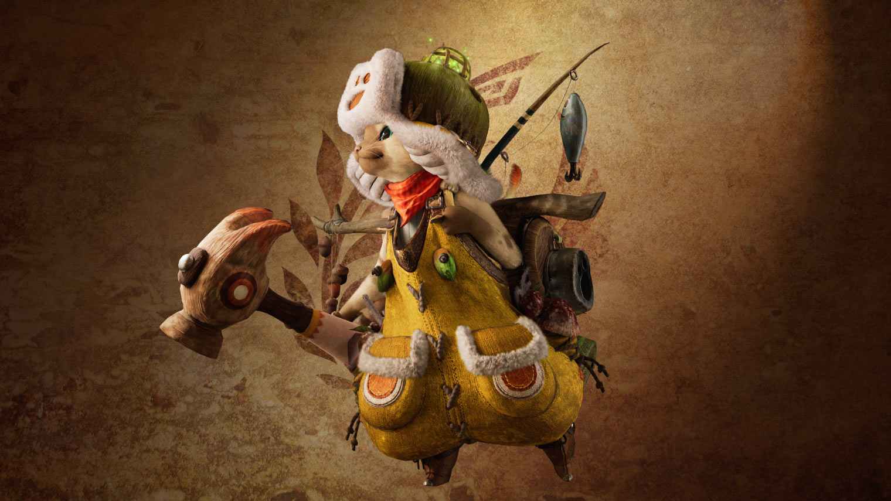

Hunter Tips
Becoming a successful hunter takes practice, patience, and preparation. These tips will help you survive hunts and improve your overall gameplay in Monster Hunter Wilds.
General Hunting Tips
Learn Monster Patterns: Watch how monsters move and attack before rushing in.
Stay Prepared: Always bring potions, antidotes, and other useful items.
Manage Stamina: Don’t run out of stamina during fights! Eat meals before
hunting to gain massive buffs to your stamina and health alongside other benefits.
Sharpen Your Weapon: Keep your weapon sharp to maintain damage output.
Combat Strategies
- Play to your weapons strengths. Attack the head when using a Blunt weapon and the tail when using a Sharp weapon
- Dodge instead of blocking if your weapon allows it. Blocking still allows some damage to go through. Better safe than sorry!
- Use the environment to your advantage. Look out for hanging rocks or other hazards to drop on your target
- Don’t get greedy! Back off to heal or sharpen your weapon when needed
Your Palico Companion
Your Palico is a loyal companion that assists you during hunts. They can attack monsters, heal you, and provide helpful support Throughout your journey.
- Support Role: Palicos can heal you and distract monsters, letting you focus on your attacks
- Damage Assistance: They contribute extra damage during fights and can be given better gear for even more power
- Customization: You can equip them with different gear and abilities tailored to your playstyle
- Utility: Palicos can gather items in your stead or set traps for you

Advanced Tips
Positioning is Key: Avoid getting cornered and try to stay behind monsters for safer attacks.
Upgrade Gear: Always improve your weapons and armor after hunts. Stronger gear makes a huge difference.
Practice Makes Perfect: The more you hunt, the better you’ll get. Don’t be discouraged by failures. Learn from them and keep improving!
Good Luck!
For more useful tips and strategies, check out the Fextralife Monster Hunter Wilds Wiki and the official Capcom forums!